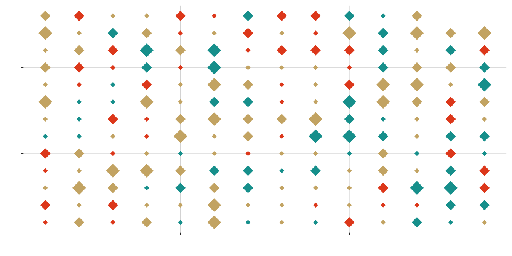
4.1.Estimating with uncertainty
The sampling Distribution
October 17, 2026
Acknowledgments
Some code and slide content was borrowed from Yaniv Brandvain and Michael Whitlock.
Some content is based on the textbook used in the course (by Freeman & Company).
Some of the sampling distribution content borrowed from: https://exploration.stat.illinois.edu/learn/Populations-Samples-and-Statistics/Sampling-Distributions/
Big Picture
Two key goals of inferential statistics:
estimate the characteristics of a population of interest based on a limited sample
hypothesis testing
Inferential Statistics
Module 2
Estimate the values of important parameters
Have measures of uncertainty for estimates
Is everything meaningless?
Q: If sampling error is unavoidable, how can I trust an estimate? What is its precision? Why measure anything anyway? HELP!!!!
A: if we know something about how the samping process might affect the estimates I get, that can inform my confidence in my estimates and the significance level in hypothesis testing.
Inferential Statistics
Q: Why do we need this?
A:
To learn about the whole population.
Test claims or hypotheses.
Make predictions with statistical models.
Calculate confidence intervals and p-values to measure uncertainty.
Key Learning Objectives
- Understand that because estimates take values by chance, they will differ from true population parameters.
- Connect the spread of the sampling distribution to uncertainty in estimates.
- Recognize the standard error as the standard deviation of the sampling distribution.
- Understand the confidence interval as a plausible range of a parameter, given an estimate and uncertainty in it.
Motivation
Estimation: A process of inferring a population parameter from sample data. This estimated value is almost never exactly identical to the true parameter value.
Sampling Error: affects precision of estimates. It is basically inevitable because it is inherent to random sampling.
Can we quantify this uncertainty related to sampling error?
Samples Take Their Value by Chance
Sets of samples from the same distribution can be different.
Therefore, estimates obtained from samples from the same population can differ by chance.
Samples: what’s the point?
We sample because we cannot measure the entire population.
When we take samples, we cannot see the sampling distribution.
Still, considering the process of sampling allows us to quantify the uncertainty in estimates.
Estimation: from samples to parameters (hopefully)
Two Ways to Conceptualize Sampling
Okay, so how do we do this?
Here are the two right** ways to think about the process of taking a sample from a population.
If you had a full population and made an ESTIMATE from a sample of size \(n\).
Think about the PROCESS that generates your population data: what would a sample generated by this process look like? (e.g. flipping a coin).
So there IS a way to deal with this uncertainty?
Q: How??
A: yes, young padawans. We use the sampling distribution – I know, panic not
The sampling distribution is at the heart of statistics
Q: But why do we need the sampling distribution?
A:
Getting a “feel” for sampling
Generating samples from a population
In two easy steps:
Take a sample of size \(n\).
Calculate the parameter estimates.
This is how we do science.
A population of 180 diamonds [1/]
| small | medium | large | |
|---|---|---|---|
| blue | 18 | 24 | 9 |
| gold | 42 | 24 | 18 |
| red | 21 | 24 | 0 |
A population of 180 diamonds [2/]
By size:
| size | n | prop |
|---|---|---|
| small | 81 | 0.45 |
| medium | 72 | 0.40 |
| large | 27 | 0.15 |
By color:
| color | n | prop |
|---|---|---|
| blue | 51 | 0.2833333 |
| gold | 84 | 0.4666667 |
| red | 45 | 0.2500000 |
A sample of 20 diamonds
Code
set.seed(1990)
star.sample.size <- 20
stars.sample <- sample_n(stars, size = star.sample.size, replace = FALSE)
ggplot(stars.sample, aes(x = x, y = y, color = color, size = size)) +
geom_point(shape = 18, show.legend = FALSE) +
ylab("") +
xlab("") +
theme(axis.text.x = element_blank(), axis.text.y = element_blank())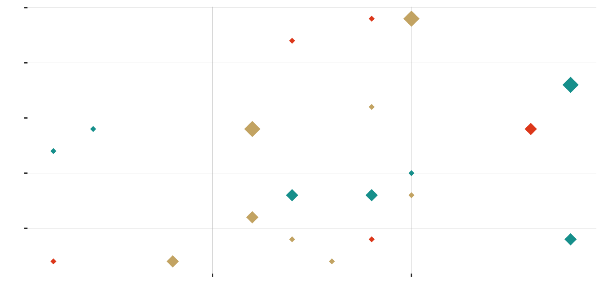
| small | medium | large | |
|---|---|---|---|
| blue | 3 | 3 | 1 |
| gold | 4 | 2 | 2 |
| red | 4 | 1 | 0 |
Another sample of 20 diamonds
Code
set.seed(2001)
star.sample.size <- 20
stars.sample2 <- sample_n(stars, size = star.sample.size, replace = FALSE)
ggplot(stars.sample2, aes(x = x, y = y, color = color, size = size)) +
geom_point(shape = 18, show.legend = FALSE) +
ylab("") +
ylab("") +
theme(axis.text.x = element_blank(), axis.text.y = element_blank())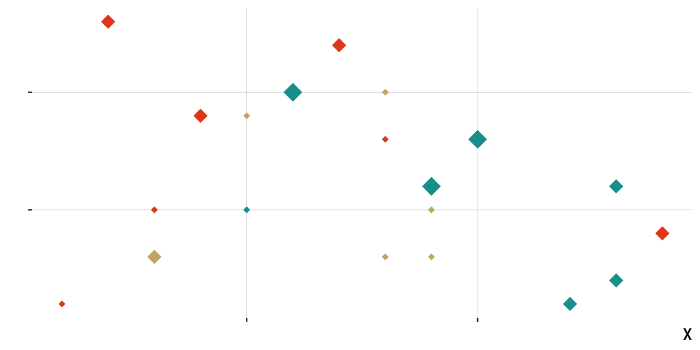
| small | medium | large | |
|---|---|---|---|
| blue | 1 | 3 | 3 |
| gold | 5 | 1 | 0 |
| red | 3 | 4 | 0 |
Aaaand … another
Code
set.seed(2010)
star.sample.size <- 20
stars.sample3 <- sample_n(stars, size = star.sample.size, replace = FALSE)
ggplot(stars.sample3, aes(x = x, y = y, color = color, size = size)) +
geom_point(shape = 18, show.legend = FALSE) +
ylab("") +
xlab("") +
theme(axis.text.x = element_blank(), axis.text.y = element_blank())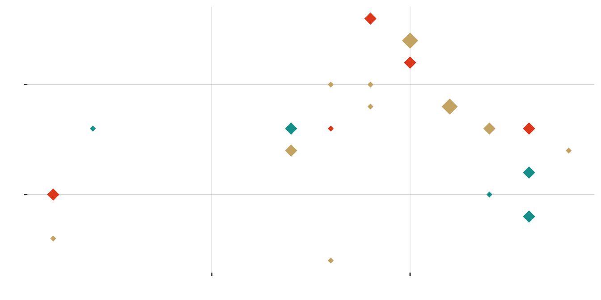
| small | medium | large | |
|---|---|---|---|
| blue | 3 | 3 | 1 |
| gold | 4 | 2 | 2 |
| red | 4 | 1 | 0 |
One Last Sample of 20 Diamonds
Code
star.sample.size <- 20
stars.sample <- sample_n(stars, size = star.sample.size, replace = FALSE)
ggplot(stars.sample, aes(x = x, y = y, color = color, size = size)) +
geom_point(shape = 18, show.legend = FALSE) + scale_color_manual(values = asteroidcity1()) +
ylab("") + xlab("") + theme(axis.text.x = element_blank(),
axis.text.y = element_blank())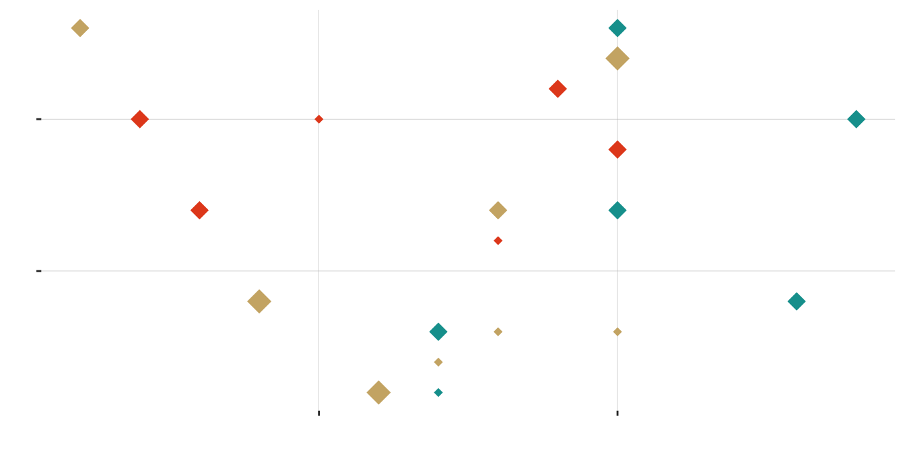
| small | medium | large | |
|---|---|---|---|
| blue | 1 | 5 | 0 |
| gold | 3 | 2 | 3 |
| red | 2 | 4 | 0 |
Lessons Learned
-
“Sampling is random”
Estimates from sampling efforts varied and did not perfectly capture the true population values. I.e, there is sampling error involved.
Random DOES NOT mean that all outcomes are equally probable.
There are no LARGE RED diamonds in the population so we never sampled a LARGE RED diamond.
The most common diamond color in the population is gold. Gold is often the most common color in a sample.
The Sampling Distribution
Let’s start from the very beginning. Consider a coin toss.
This probability distribution shows all possible outcomes of a single coin toss and how likely they are. I.e., in the long term, if you toss a coin MANY times, you would expect equal proportions of each result.
Code
plot.one.toss.prob <- data.frame(outcome = c("heads", "tails"),
probability = c(1/2, 1/2)) |>
ggplot(aes(x = outcome, y = probability)) + geom_bar(aes(fill = outcome),
stat = "identity", show.legend = FALSE) + ggtitle("Probability Distribution",
subtitle = "Outcome of a fair coin") + scale_y_continuous(expand = c(0,
0), limits = c(0, 0.6)) + ylab("Expected probability") +
# scale_fill_manual(values = '#006475')+
theme(axis.ticks = element_blank())
plot.one.toss.prob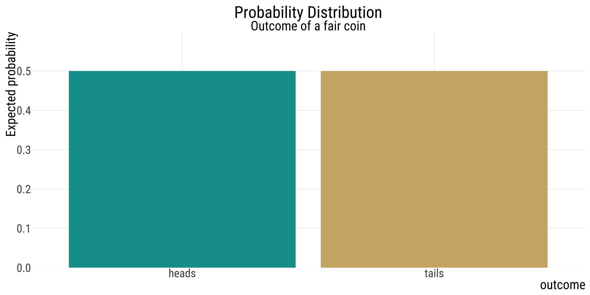
What about a streak?
The sampling distribution can help us here.
Sampling distribution!
A sampling distribution is a distribution of the possible values that a sample statistic can take from repeated random samples of the same sample size n when sampling with replacement from the same population.
It may be considered as the distribution of the statistic for all possible samples from the same population of a given sample size.
What does the sampling distribution depend on?
- the underlying distribution of the population (in the coin example, uniform)
- the statistic being considered (say, the number of sixes expected if I toss the coin a number of times)
- the sampling procedure employed
- the sample size used (e.g., number of coin tosses, number of diamonds sampled)
Example: possible outcomes of tossing a fair coin 20 times
One possible outcome leads to this histogram:
Code
i <- 1
df <- tibble(x = c("heads", "tails")) |>
rep_sample_n(size = 20, replace = T, reps = i) |>
group_by(replicate, heads = x == "heads") |>
tally() |>
filter(heads == TRUE) |>
mutate(prop = n/20)
pOneSamp <- ggplot(df, aes(x = prop)) + geom_histogram(bins = 21,
color = "darkgray") + ggtitle(stringr::str_wrap(paste0("Proportion of heads in 20 tosses (",
i, " simulations)"), 30)) + scale_x_continuous(limits = c(0,
1), breaks = 0:20/20) + xlab(stringr::str_wrap("Proportion of heads in 20 tosses",
20)) + ylab(stringr::str_wrap("Number of simulations", 10)) +
xlim(0, 1)
pOneSamp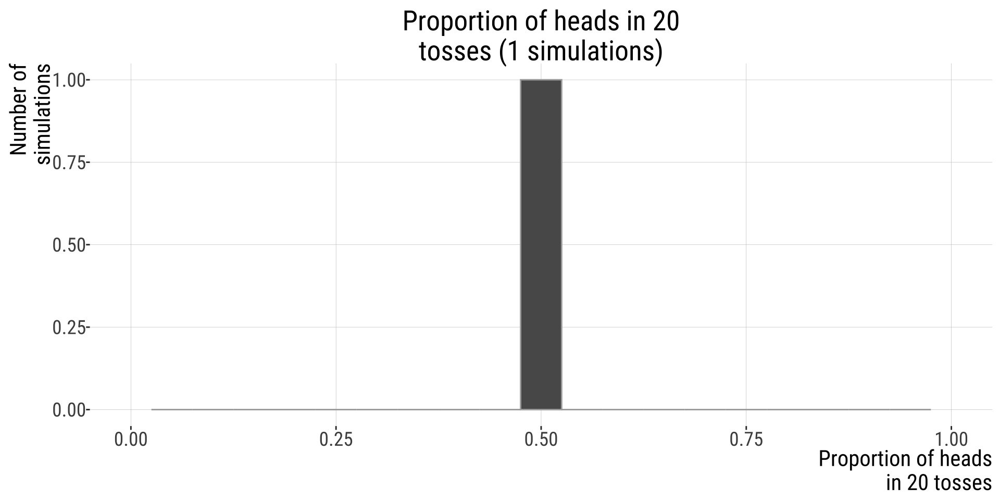
Repeat this process 10 times
Code
i <- 10
df <- tibble(x = c("heads", "tails")) |>
rep_sample_n(size = 20, replace = T, reps = i) |>
group_by(replicate, heads = x == "heads") |>
tally() |>
filter(heads == TRUE) |>
mutate(prop = n/20)
ggplot(df, aes(x = prop)) + geom_histogram(bins = 21, color = "darkgray") +
ggtitle(stringr::str_wrap(paste0("Proportion of heads in 20 tosses (",
i, " simulations)"), 30)) + scale_x_continuous(limits = c(0,
1), breaks = 0:20/20) + xlab(stringr::str_wrap("Proportion of heads in 20 tosses",
20)) + ylab(stringr::str_wrap("Number of simulations", 10)) +
xlim(0, 1)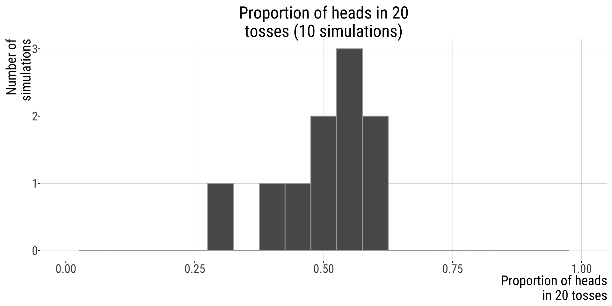
100 times
Code
i <- 100
df <- tibble(x = c("heads", "tails")) |>
rep_sample_n(size = 20, replace = T, reps = i) |>
group_by(replicate, heads = x == "heads") |>
tally() |>
filter(heads == TRUE) |>
mutate(prop = n/20)
ggplot(df, aes(x = prop)) + geom_histogram(bins = 21, color = "darkgray") +
ggtitle(stringr::str_wrap(paste0("Proportion of heads in 20 tosses (",
i, " simulations)"), 30)) + scale_x_continuous(limits = c(0,
1), breaks = 0:20/20) + xlab(stringr::str_wrap("Proportion of heads in 20 tosses",
20)) + ylab(stringr::str_wrap("Number of simulations", 10)) +
xlim(0, 1)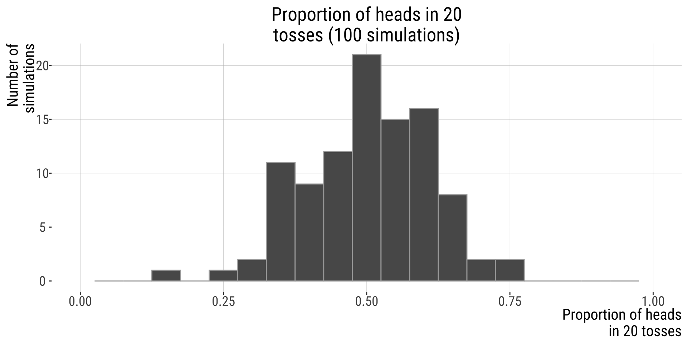
10000
Code
i <- 10000
df <- tibble(x = c("heads", "tails")) |>
rep_sample_n(size = 20, replace = T, reps = i) |>
group_by(replicate, heads = x == "heads") |>
tally() |>
filter(heads == TRUE) |>
mutate(prop = n/20)
p1000samp <- ggplot(df, aes(x = prop)) + geom_histogram(bins = 21,
color = "darkgray") + ggtitle(stringr::str_wrap(paste0("Proportion of heads in 20 tosses (",
i, " simulations)"), 30)) + scale_x_continuous(limits = c(0,
1), breaks = 0:20/20) + xlab(stringr::str_wrap("Proportion of heads in 20 tosses",
20)) + ylab(stringr::str_wrap("Number of simulations", 10)) +
xlim(0, 1)
p1000samp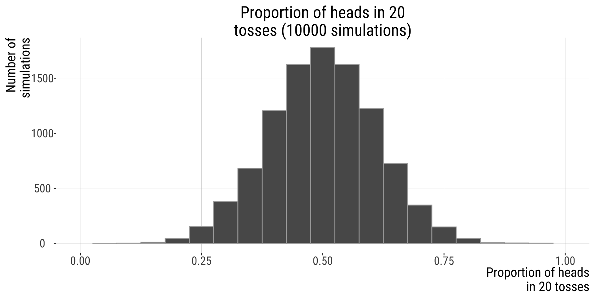
That was a sampling distribution (of a proportion)
Attention!
Population distribution vs sampling distribution
Population distribution
Population distribution: possible values for a variable from a single observation, along with the corresponding probability for each of the possible values.
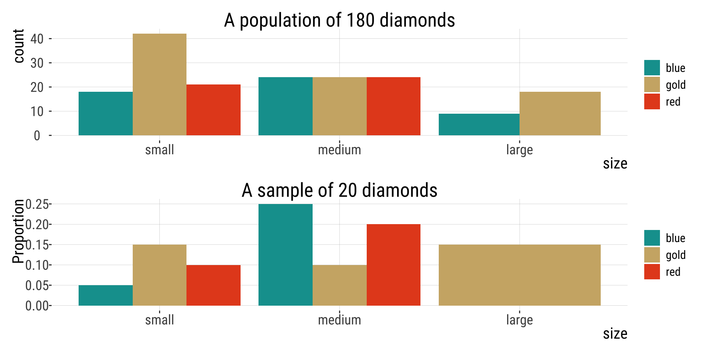
Sample Distribution
A sample distribution displays the values for a variable for each of the observations in the sample. From that sample distribution, we could calculate the statistic value for that specific sample. That statistic would then be a single observation in the sampling distribution.

Sampling Distribution
For a sampling distribution, we are no longer interested in the possible values of a single observation but instead want to know the possible values of a statistic calculated from a sample.

A more elaborate example than just coin tosses
Sampling Distribution of proportion of large diamonds
Generating a sampling distribution
In three easy steps:
Take a random sample of size \(n\).
Calculate the parameter estimates.
Rinse and repeat many times.
Example: Diamonds (sizes and color)
| replicate | color | small | medium | large |
|---|---|---|---|---|
| 1 | blue | 0.15 | 0.10 | 0.05 |
| 1 | gold | 0.20 | 0.15 | 0.15 |
| 1 | red | 0.10 | 0.10 | 0.00 |
| 2 | blue | 0.25 | 0.15 | 0.05 |
| 2 | gold | 0.30 | 0.10 | 0.05 |
| 2 | red | 0.00 | 0.10 | 0.00 |
| 999 | blue | 0.10 | 0.15 | 0.15 |
| 999 | gold | 0.20 | 0.20 | 0.00 |
| 999 | red | 0.10 | 0.10 | 0.00 |
| 1000 | blue | 0.10 | 0.15 | 0.05 |
| 1000 | gold | 0.15 | 0.15 | 0.15 |
| 1000 | red | 0.10 | 0.15 | 0.00 |
Sampling distribution (large diamonds)
| replicate | small blue | small gold | small red | medium blue | medium gold | medium red | large blue | large gold |
|---|---|---|---|---|---|---|---|---|
| 1 | 4 | 2 | 2 | 3 | 3 | 3 | 1 | 2 |
| 2 | 0 | 4 | 4 | 2 | 4 | 2 | 3 | 1 |
| 999 | 2 | 6 | 0 | 2 | 2 | 4 | 1 | 3 |
| 1000 | 1 | 5 | 4 | 2 | 4 | 2 | 1 | 1 |
Sampling distribution of proportion of large diamond
Code
ggplot(sampling.dist.large, aes(x = prop)) + geom_histogram(binwidth = 1/star.sample.size,
color = "lightgray", fill = "#006475") + geom_vline(xintercept = true.prop.large,
lty = 2, color = "white") + ggtitle(sprintf("Proportion large diamonds (n = %s)",
star.sample.size), subtitle = glue::glue("Dotted white line is the population parameter (p={true.prop.large})")) +
xlab("proportion") + ylab("# of replicates\n(of 1000 simulations)") +
scale_x_continuous(breaks = seq(0, 1, 0.1)) + xlim(0, 0.5)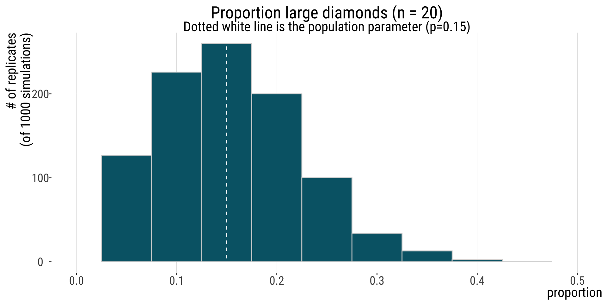
The joint sampling distribution
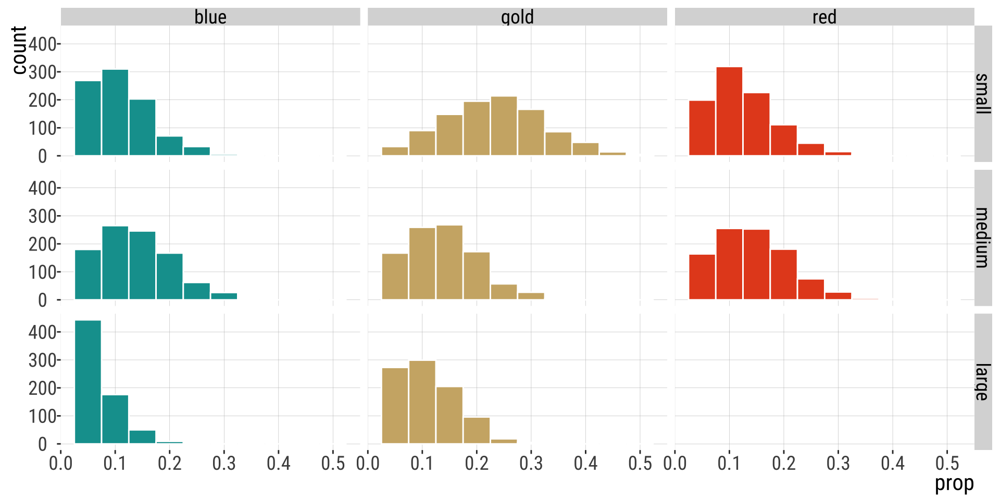
Properties of the sampling distribution
Things we can control:
- The number of repeated samples to take
- The size of the sample
- The statistic to calculate for each sample
Properties of the distribution:
- The shape of the distribution
- The center of the distribution
- The variability (spread) of the distribution
Apps to help you grasp this
https://www.zoology.ubc.ca/~whitlock/Kingfisher/SamplingNormal.htm
https://shiny.abdn.ac.uk/Stats/apps/app_sampling/
http://shiny.calpoly.sh/Sampling_Distribution/
https://stats.cpm.org/propsamples/
https://istats.shinyapps.io/SampDist_Prop/
What does any of this have to do with quantifying uncertainty?
The Standard Error: Definition
The standard error reflects the difference between an estimate and the target parameter value.
The standard error predicts the sampling error of the estimate.
The standard deviation of the sampling distribution of a statistic is its standard error!
What?
Code
ggplot(sampling.dist.large, aes(x = prop)) +
geom_histogram(binwidth = 1 / star.sample.size, color = "lightgray", fill = "#006475") +
geom_vline(xintercept = true.prop.large, lty = 2, color = "white") +
ggtitle(sprintf("Proportion large diamonds (n = %s)", star.sample.size),
subtitle = glue::glue("Dotted white line is the population parameter (p={true.prop.large})")
) +
xlab("proportion of large diamonds") +
ylab("# of replicates\n(of 1000 simulations)") +
scale_x_continuous(breaks = seq(0, 1, 0.1)) +
xlim(0, 0.5)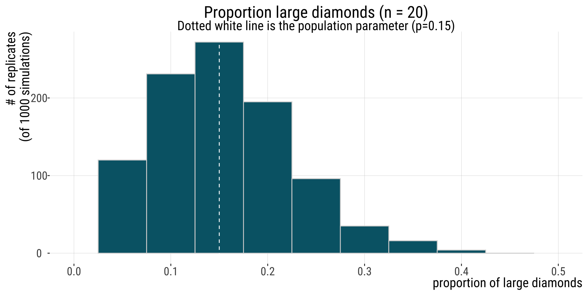
Variability in Estimates (i.e., standard error) Decreases with N
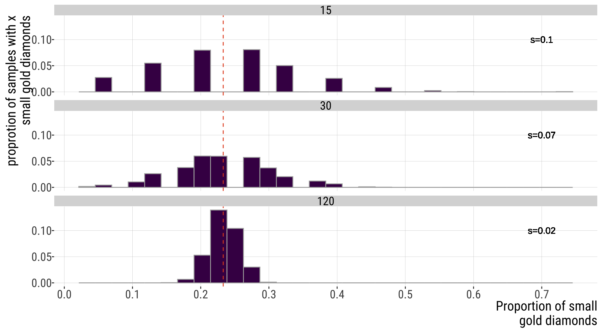
True proportion is p=0.15. The standard deviation of each of these sampling distributions is the standard error of the estimate for each sample size.Nr of replicates: 1,000.
Q: Isn’t there an easier way to estimate the standard error?
A: Yes, next time!
See also:
Sampling Distribution Demo on Posit Cloud (part of lab 6).
In summary
The sampling distribution is the distribution of the parameter estimate of interest from these samples
It is basically a histogram of all the values that a sample statistic can take on
They are super important: when you take a sample from a population, you base your conclusions on that sample, but we know samples vary randomly (even in the absence of bias)
To be able to interpret your sample results (say, mean bill length in a sample of 20 penguins from a given population) you need they stand amongst the “crowd”
The “crowd” of all possible sample statistics you can possibly get is the sampling distribution
The standard deviation of the sampling distribution for a statistic is its standard error.